Conseils et guides
Prix de construction, rôle du bureau d'études, normes électriques : nos guides pour préparer votre projet au Maroc.
Aucun article ne correspond. Essayez un autre mot, ou posez-nous la question.
Par où commencer ?
Structure et béton armé
Tout le thème →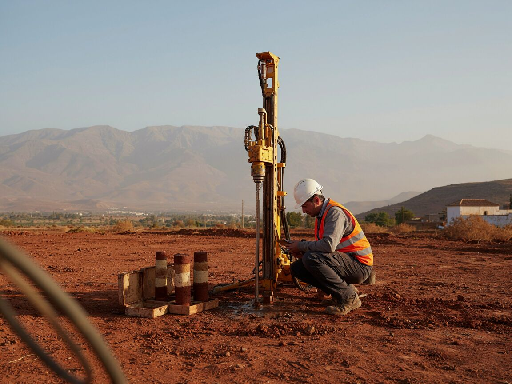
Étude de sol au Maroc : est-elle obligatoire et combien coûte-t-elle ?
Ce que révèle une étude géotechnique, quand la faire, combien elle coûte pour une villa, et pourquoi c'est l'une des dépenses les plus rentables d'un chantier.
Lire l'article →
Règlement parasismique RPS 2011 : ce qu'il change pour votre maison
Zonage sismique, règles de conception, chaînages et ferraillage : ce que le règlement parasismique impose concrètement à une villa ou un riad au Maroc.
Lire l'article →
Dosage du béton : fondations, dalle, poteaux et béton de propreté
Combien de ciment par m³ selon l'ouvrage, comment se compose un mètre cube de béton, et les erreurs de chantier qui font perdre sa résistance au béton.
Lire l'article →Prix d'une piscine en béton au Maroc en 2026
Prix au m² de bassin, exemples chiffrés, ce que les devis n'incluent pas toujours et pourquoi un bassin en béton armé se calcule comme une structure.
Lire l'article →
Fissures dans une maison : causes, gravité et quand s'inquiéter
Comment lire une fissure (largeur, tracé, évolution), distinguer le superficiel du structurel, et les bons réflexes avant de reboucher.
Lire l'article →
Ajouter un étage à sa maison au Maroc : faisabilité et démarches
Avant d'ajouter un étage : ce qu'autorise l'urbanisme, ce que la structure existante peut porter, le permis, et les renforcements possibles.
Lire l'article →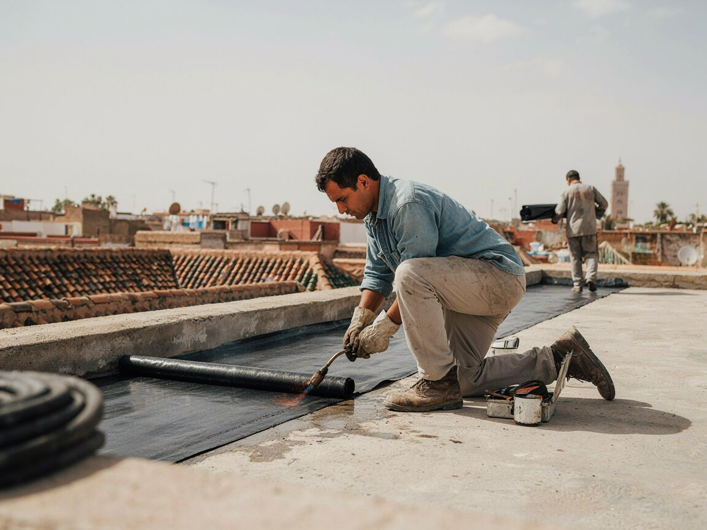
Étanchéité d'une toiture-terrasse au Maroc : solutions et prix au m²
Bitume, liquide ou membrane PVC : comparer les solutions d'étanchéité, leurs prix au m², et les détails qui évitent les infiltrations.
Lire l'article →
Quel type de fondation choisir : semelles, radier ou pieux ?
Le type de fondation ne se choisit pas sur catalogue : il découle de la portance du sol, de la profondeur du bon sol et des charges de votre bâtiment.
Lire l'article →
Dimensions d'une semelle isolée ou filante : comment les calculer
La taille d'une semelle découle d'un calcul simple dans son principe : la charge qu'elle reçoit divisée par ce que le sol peut supporter. Le reste est affaire de ferraillage et de détails.
Lire l'article →
Longrines : à quoi servent-elles et comment les dimensionner ?
Invisibles une fois le dallage coulé, les longrines sont pourtant un élément clé de la tenue parasismique d'une maison : elles empêchent les fondations de bouger chacune de leur côté.
Lire l'article →
Chaînages horizontaux et verticaux : rôle et règles au Maroc
Les chaînages ceinturent les murs de maçonnerie et les relient aux planchers. Dans une région sismique comme celle de Marrakech, ils font la différence entre un mur qui fissure et un mur qui s'effondre.
Lire l'article →
Section minimale d'un poteau en béton armé selon le RPS
Le poteau de 20 × 20 cm encore vu sur certains chantiers ne respecte pas le règlement parasismique. Voici ce que le RPS impose et ce qui reste à calculer.
Lire l'article →
Plancher hourdis ou dalle pleine : lequel choisir pour votre maison ?
Le plancher à corps creux est la solution la plus répandue au Maroc pour les villas, mais la dalle pleine reste indispensable dans certains cas. Les critères pour trancher.
Lire l'article →
Poutre en béton armé : quelle retombée pour quelle portée ?
La retombée d'une poutre est souvent un sujet de discussion entre architecte, client et ingénieur. Voici les ordres de grandeur et les marges de manœuvre réelles.
Lire l'article →
Enrobage des armatures du béton armé : quelles valeurs respecter ?
L'enrobage, c'est l'épaisseur de béton entre l'acier et la surface. Quelques millimètres en moins suffisent à faire rouiller les armatures et éclater le béton en quelques années.
Lire l'article →
Contrôle du ferraillage avant coulage : la checklist du chantier
Une fois le béton coulé, il est trop tard : le ferraillage devient invisible. Le contrôle avant coulage est le moment où se joue la solidité réelle de votre structure.
Lire l'article →
Cure du béton par forte chaleur : les bons gestes à Marrakech
Quand il fait plus de 40 °C à Marrakech, un béton mal protégé peut perdre une part importante de sa résistance et se couvrir de fissures en quelques heures.
Lire l'article →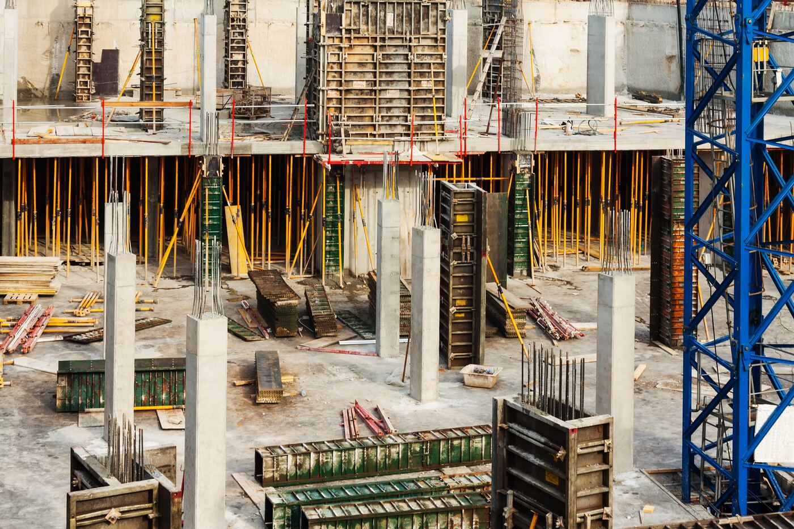
Délai de décoffrage d'une dalle, d'une poutre et des poteaux
Décoffrer trop tôt est l'une des causes classiques de flèches excessives, de fissures, voire d'effondrement. Les délais à respecter selon l'élément et les conditions.
Lire l'article →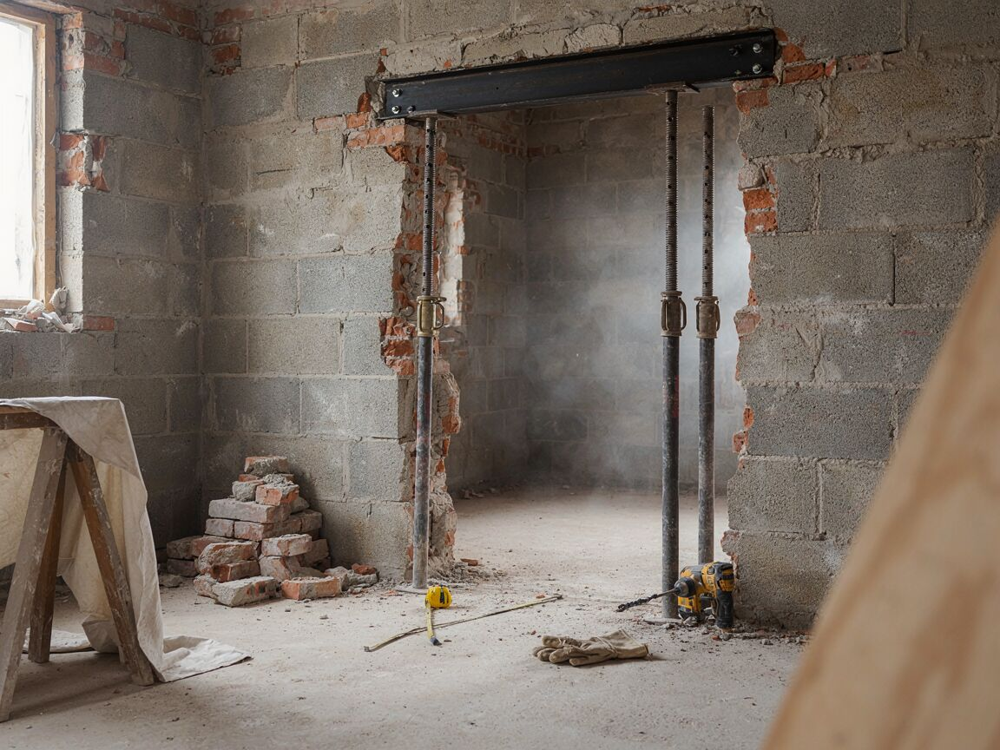
Ouvrir ou supprimer un mur porteur : étapes, risques et étude
Agrandir un séjour ou créer une baie en supprimant un mur porteur est possible, à condition de reporter correctement les charges. Ce qu'il faut savoir avant de casser.
Lire l'article →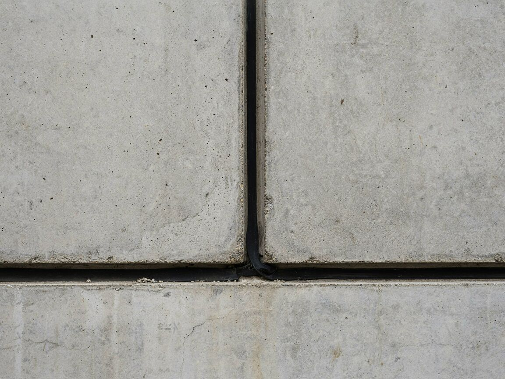
Joint de dilatation d'un bâtiment : quand et tous les combien ?
Un bâtiment en béton se dilate à la chaleur et se rétracte au froid. Au-delà d'une certaine longueur, il faut le couper en blocs indépendants pour éviter les fissures.
Lire l'article →
Mur de soutènement : calcul, drainage et erreurs à éviter
Un mur de soutènement retient des tonnes de terre et souvent de l'eau. Mal conçu ou mal drainé, il bascule ou se fissure : c'est un ouvrage à faire calculer.
Lire l'article →
Remontées capillaires dans les murs : causes et traitements
Humidité en pied de mur, auréoles, salpêtre : les remontées capillaires sont fréquentes dans les maisons anciennes et les riads. Comment les reconnaître et les traiter durablement.
Lire l'article →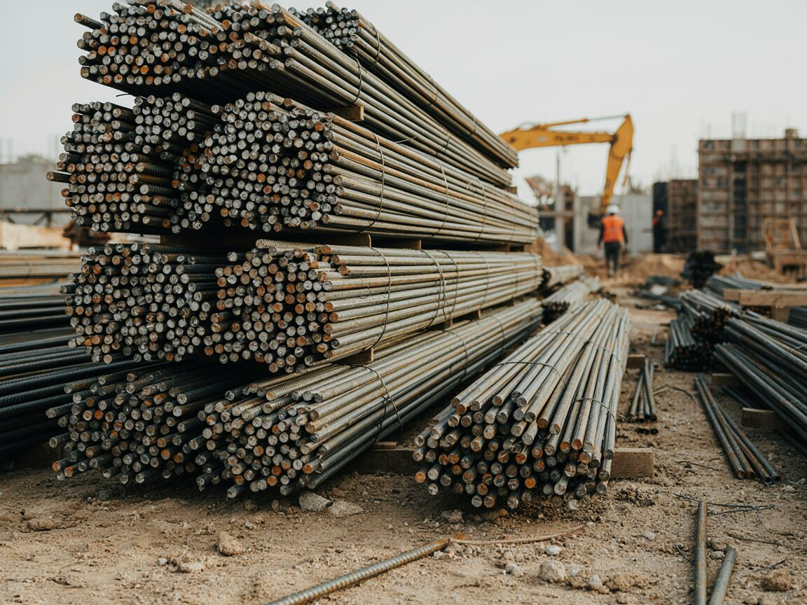
Acier HA FeE500 : diamètres, sections et poids au mètre
Pour lire un plan de ferraillage, estimer une commande d'acier ou vérifier une facture, il faut connaître la section et le poids au mètre de chaque diamètre de barre.
Lire l'article →
Classes de béton B25, C25/30, C30/37 : que signifient-elles ?
Sur les plans et dans les cahiers des charges, le béton est désigné par une classe de résistance. Savoir la lire permet de commander le bon béton et de vérifier ce qui est livré.
Lire l'article →
Reprise en sous-œuvre des fondations : quand et comment ?
Renforcer ou approfondir les fondations d'un bâtiment existant sans le démolir est possible. C'est une opération délicate, qui se conçoit et se surveille avec soin.
Lire l'article →
Sous-sol : cuvelage, étanchéité et infiltrations d'eau
Un sous-sol qui prend l'eau est l'un des défauts les plus coûteux à reprendre. La protection se décide dès la conception, en fonction de l'eau présente dans le sol.
Lire l'article →Électricité
Tout le thème →
Combien de prises sur un même circuit ? Les règles de la NF C 15-100
Le nombre de prises admis sur un circuit dépend de la section des fils et du calibre du disjoncteur. Voici les repères de la NF C 15-100, référence des bureaux d'études au Maroc.
Lire l'article →
Circuits spécialisés obligatoires : four, lave-linge, clim…
Certains appareils doivent avoir leur propre ligne depuis le tableau. Quels sont-ils, avec quelle section et quel disjoncteur, et que prévoir pour une villa climatisée à Marrakech.
Lire l'article →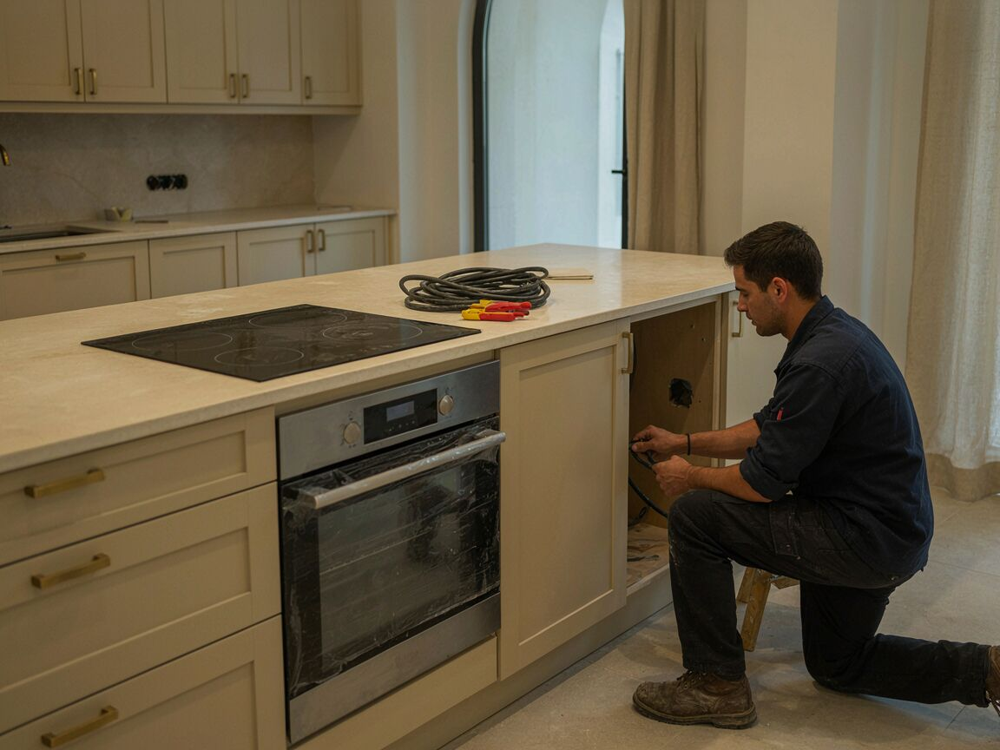
Four et plaque de cuisson : quel câble et quel disjoncteur ?
La cuisine concentre les appareils les plus puissants de la maison. Voici les sections de câble et les calibres de disjoncteur usuels pour le four et la plaque, et les erreurs fréquentes sur chantier.
Lire l'article →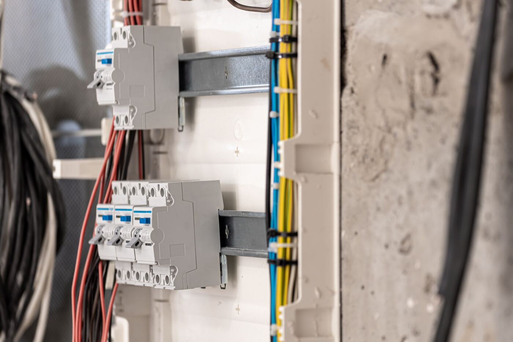
Disjoncteur ou interrupteur différentiel : quelles différences ?
Trois appareils aux noms proches, trois rôles différents dans le tableau électrique. Comprendre la différence permet de lire un devis et de savoir pourquoi un appareil « saute ».
Lire l'article →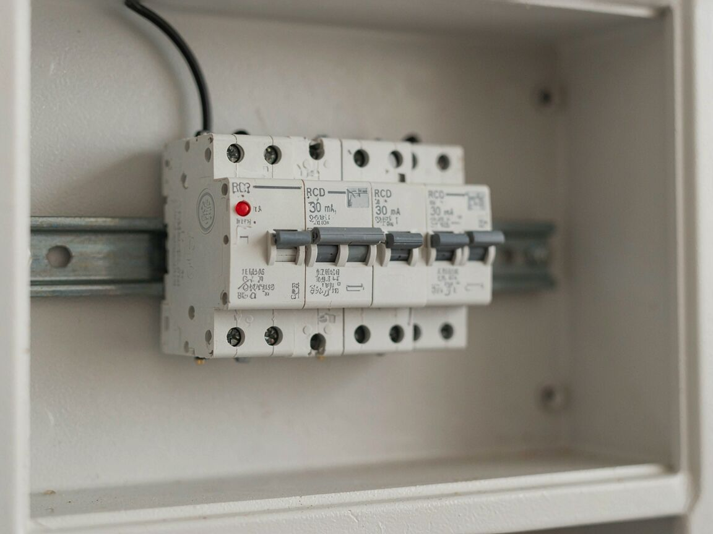
Différentiel 30 mA type AC, A ou F : lequel pour quel circuit ?
Tous les interrupteurs différentiels 30 mA ne détectent pas les mêmes fuites. Le bon type dépend des appareils branchés, et la question compte dans une villa marocaine très équipée en climatisation.
Lire l'article →
Combien d'interrupteurs différentiels selon la surface du logement ?
Le nombre d'interrupteurs différentiels dépend de la surface du logement et du nombre de circuits. Voici le tableau de référence et la façon de répartir les circuits dans une villa.
Lire l'article →
Section de câble et calibre de disjoncteur : le tableau de référence
Le calibre du disjoncteur se choisit d'après la section du câble qu'il protège. Voici le tableau usuel des installations domestiques, et les cas où il faut aller plus loin qu'un tableau.
Lire l'article →
Mise à la terre d'une maison : piquet, fond de fouille, résistance
La prise de terre évacue les courants de défaut et permet aux différentiels de jouer leur rôle. La meilleure solution se décide au moment des fondations.
Lire l'article →
Liaison équipotentielle principale (LEP) : rôle et réalisation
La liaison équipotentielle principale met au même potentiel toutes les masses métalliques qui entrent dans le bâtiment. Un fil discret, mais indispensable à la sécurité.
Lire l'article →
Liaison équipotentielle supplémentaire (LES) en salle de bain
Dans la salle de bain, l'eau et le corps mouillé rendent un choc électrique beaucoup plus dangereux. La liaison équipotentielle supplémentaire met au même potentiel tout ce qui est métallique dans la pièce.
Lire l'article →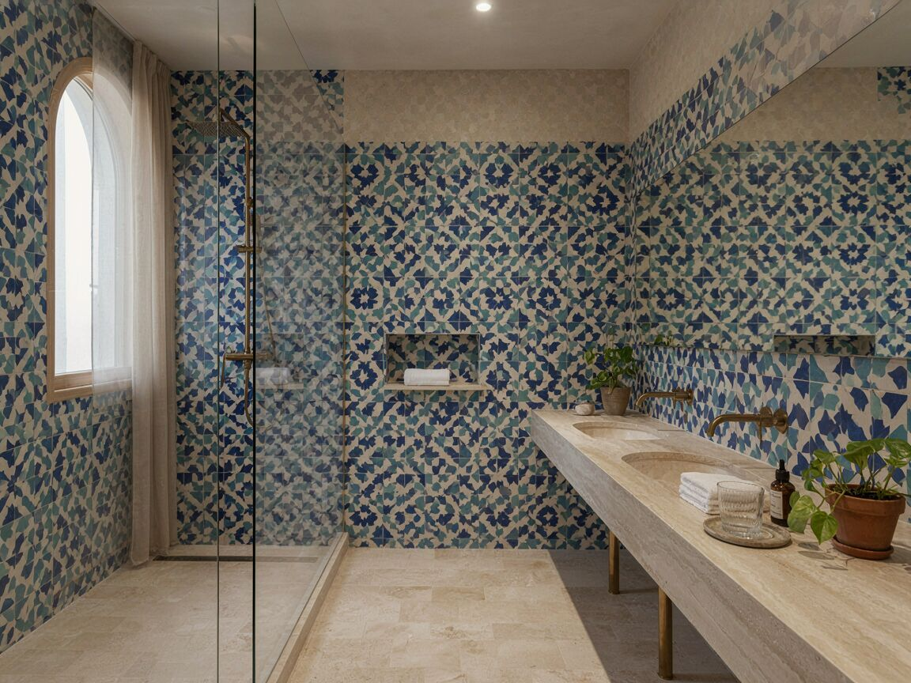
Volumes 0, 1, 2 de la salle de bain : que peut-on installer ?
La NF C 15-100 découpe la salle de bain en volumes autour de la baignoire et de la douche. Plus on est près de l'eau, plus les règles sont strictes.
Lire l'article →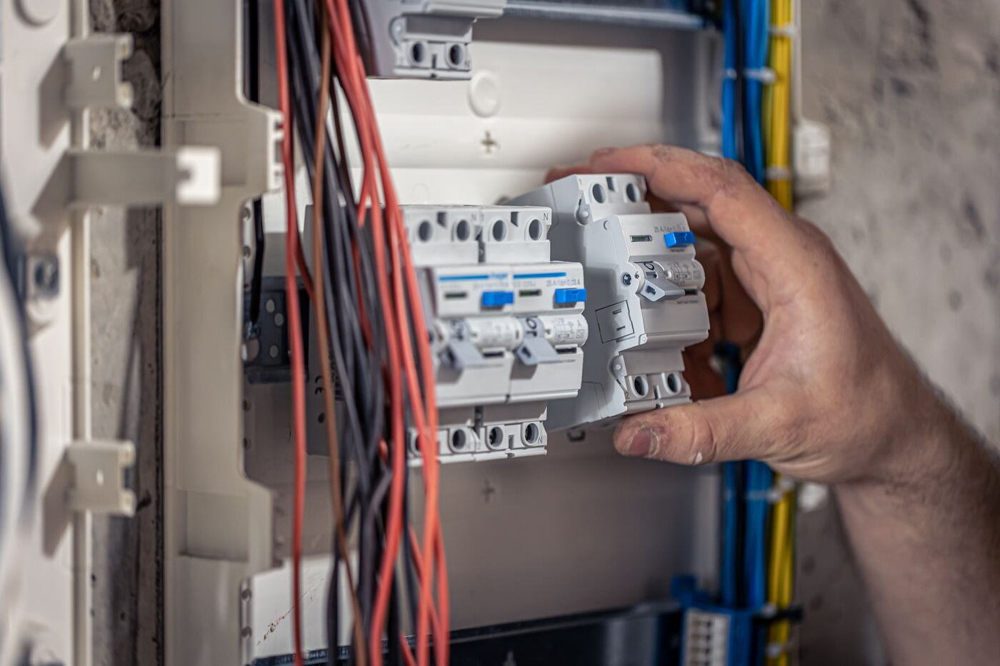
Tableau électrique et GTL : emplacement, nombre de rangées, réserve
Le tableau électrique et la gaine technique logement (GTL) regroupent l'arrivée d'énergie et les protections. Leur emplacement et leur taille se décident sur plan, pas sur chantier.
Lire l'article →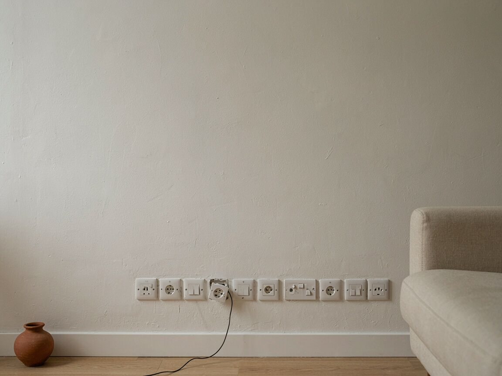
Nombre minimal de prises et de points lumineux par pièce (NF C 15-100)
La norme fixe un minimum de prises et de points lumineux par pièce. Ce sont des planchers, pas des objectifs : dans une villa, on prévoit presque toujours davantage.
Lire l'article →
Électricité de cuisine : prises, circuits et hauteurs selon la norme
La cuisine est la pièce la plus chargée électriquement d'une maison. Voici le nombre de prises, les circuits à prévoir et les emplacements à éviter, selon les repères de la NF C 15-100.
Lire l'article →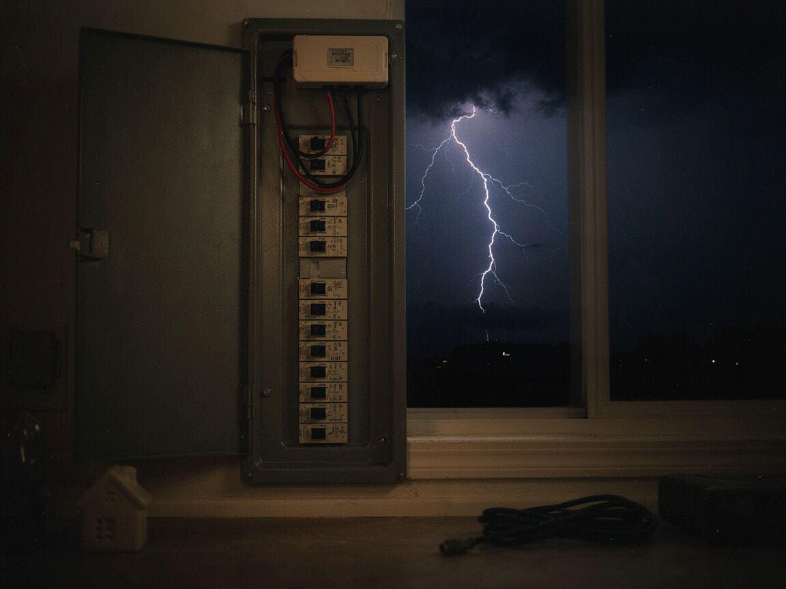
Parafoudre : quand est-il utile ou obligatoire pour une maison ?
Un orage à plusieurs kilomètres peut suffire à griller une box, une centrale d'alarme ou la carte électronique d'une climatisation. Le parafoudre limite ces surtensions ; voici quand il est exigé et quand il est simplement raisonnable.
Lire l'article →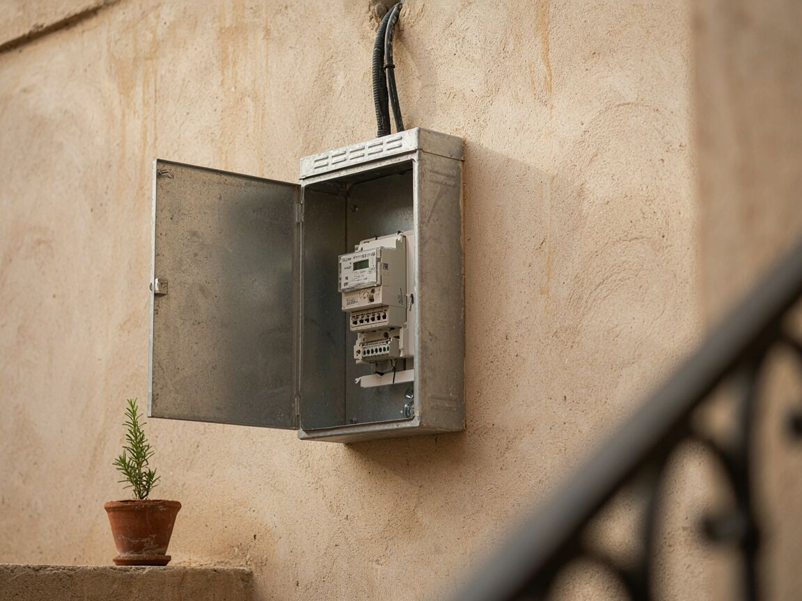
Monophasé ou triphasé pour une villa au Maroc : comment choisir
Le choix entre monophasé et triphasé se fait au moment de la demande de branchement auprès du distributeur. Il dépend de la puissance totale de la villa et de quelques gros équipements.
Lire l'article →
Bilan de puissance d'une villa : quelle puissance de compteur demander
Additionner la puissance de tous les appareils donne un chiffre trop élevé : ils ne fonctionnent jamais tous en même temps. Le bilan de puissance sert à demander le bon branchement, ni trop faible ni surdimensionné.
Lire l'article →
Chute de tension et longueur de câble : calcul et règles à respecter
Plus un câble est long et fin, plus la tension baisse au bout. Dans une villa avec jardin, pool house ou portail éloigné, c'est souvent la longueur, et non le calibre du disjoncteur, qui impose la section du câble.
Lire l'article →
Électricité de piscine : volumes, TBTS 12 V et coffret de filtration
Une piscine associe eau, corps humain et électricité : la combinaison la plus dangereuse. Les règles reposent sur des volumes autour du bassin, comme dans une salle de bain, mais avec des distances plus grandes.
Lire l'article →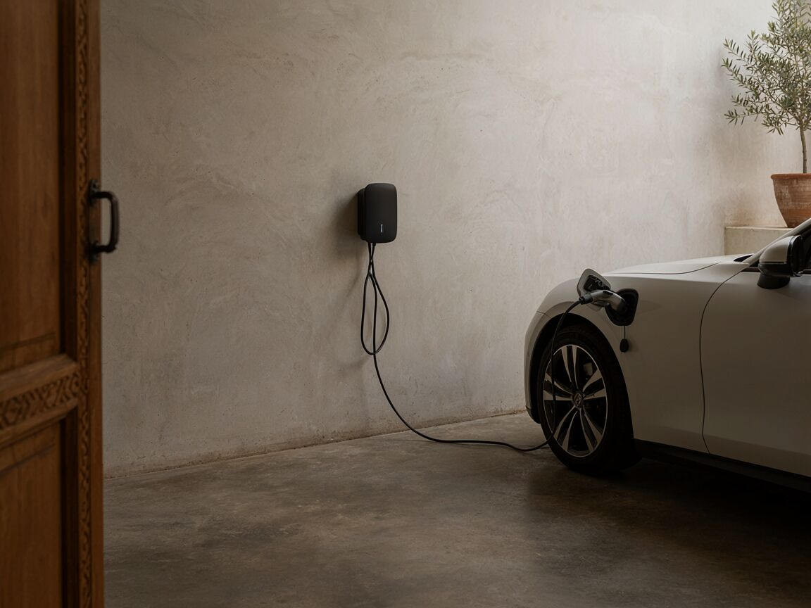
Borne de recharge à la maison au Maroc : puissance, câble et prix
Recharger une voiture électrique sur une prise ordinaire est lent et sollicite un circuit qui n'est pas fait pour ça. Une borne murale (wallbox) sur un circuit dédié est la solution normale à la maison.
Lire l'article →
Panneaux solaires en autoconsommation : ce que change la loi 82-21
Depuis l'entrée en vigueur du décret d'application de la loi 82-21, un particulier peut raccorder ses panneaux solaires au réseau dans un cadre défini. Voici les règles, les démarches et la façon de dimensionner une installation rentable.
Lire l'article →
Couleur des fils électriques : phase, neutre et terre selon la norme
Les couleurs des conducteurs ne sont pas décoratives : elles permettent à tout électricien d'identifier instantanément le neutre, la terre et les phases. Voici le code à respecter et ses limites.
Lire l'article →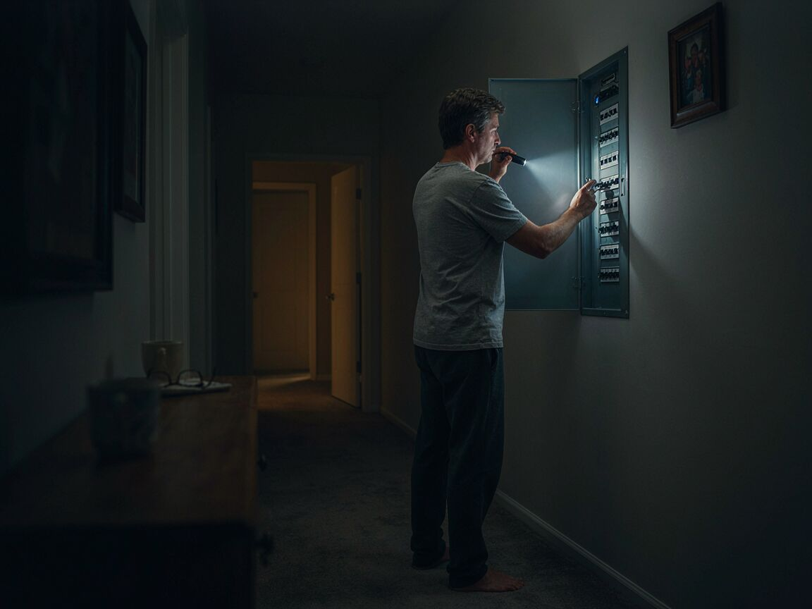
Disjoncteur ou différentiel qui saute : causes et diagnostic
Un disjoncteur qui saute n'est pas une panne : c'est une protection qui fonctionne. Encore faut-il savoir lequel a déclenché, et pourquoi, avant de le réarmer.
Lire l'article →
Prix d'une installation électrique de villa au Maroc : repères 2026
Les devis d'électricité pour une même villa peuvent varier du simple au triple. L'écart vient presque toujours du périmètre : nombre de points, qualité du matériel, courants faibles, extérieurs. Voici comment lire les prix.
Lire l'article →
Courants faibles d'une villa : RJ45, coffret de communication, fibre
Le Wi-Fi ne remplace pas le câble. Dans une villa en béton armé, avec plusieurs niveaux et des murs épais, un réseau RJ45 bien pensé dès le gros œuvre évite des années de connexion instable.
Lire l'article →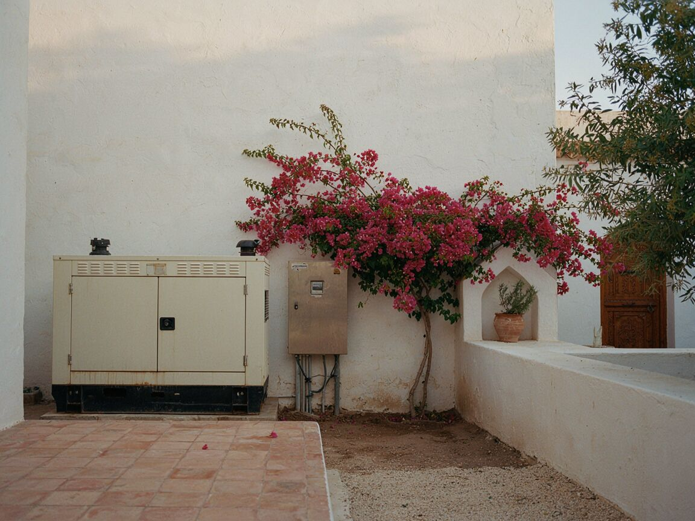
Groupe électrogène pour villa : puissance, inverseur de source, prix
Pour une villa isolée, un site en bout de ligne ou une maison d'hôtes qui ne peut pas se permettre une coupure, le groupe électrogène est une assurance. Mal raccordé, il devient dangereux pour vous et pour les agents du réseau.
Lire l'article →
Installation électrique d'une villa : la NF C 15-100 et ses règles clés
Pourquoi la norme NF C 15-100 sert de référence dans les études électriques au Maroc, ce qui a changé avec l'édition 2024, et les points à vérifier sur votre projet.
Lire l'article →Plomberie et sanitaire
Tout le thème →
Diamètre des tuyaux de plomberie : alimentation et évacuation
Un tuyau trop petit donne un filet d'eau à la douche ou un lavabo qui se vide mal. Voici les diamètres courants, appareil par appareil, et ce qui les détermine.
Lire l'article →
PER, multicouche, cuivre ou PPR : quel tuyau de plomberie choisir ?
Quatre familles de tubes se partagent les chantiers marocains. Aucune n'est mauvaise, mais chacune a ses règles de pose et ses pièges.
Lire l'article →
Pente d'évacuation des eaux usées : 1 cm par mètre minimum
Une évacuation bouchée tous les six mois vient presque toujours d'une pente mal réglée. Les règles sont simples, encore faut-il les vérifier avant de couler la dalle.
Lire l'article →
Ventilation primaire des chutes : pourquoi les odeurs remontent
Des mauvaises odeurs dans la salle de bain sans fuite visible ? Le coupable est souvent une colonne d'évacuation qui ne respire pas.
Lire l'article →
Chauffe-eau solaire au Maroc : quelle capacité choisir ?
Avec l'ensoleillement du Maroc, le chauffe-eau solaire est presque toujours un bon investissement. Encore faut-il le dimensionner et l'installer correctement.
Lire l'article →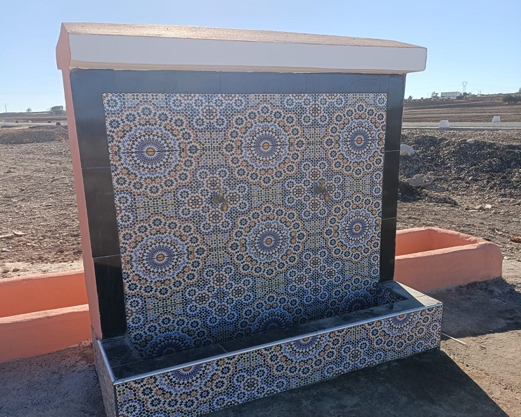
Surpresseur et manque de pression d'eau : causes et solutions
Douche sans débit à l'étage, chauffe-eau qui coule à peine : avant d'acheter une pompe, il faut comprendre d'où vient le manque de pression.
Lire l'article →
Coup de bélier dans les tuyaux : causes et solutions efficaces
Un « bang » dans les murs quand le lave-linge s'arrête ou qu'on ferme un mitigeur : ce n'est pas qu'un bruit, c'est une surpression qui fatigue toute l'installation.
Lire l'article →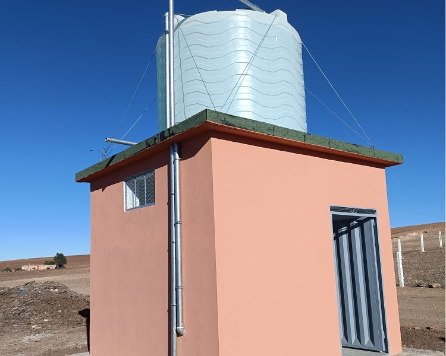
Fosse septique au Maroc : dimensionnement, pose et entretien
Hors des zones raccordées à l'égout, une villa ou une ferme doit traiter elle-même ses eaux usées. Une fosse bien dimensionnée et entretenue évite odeurs, débordements et pollution du puits.
Lire l'article →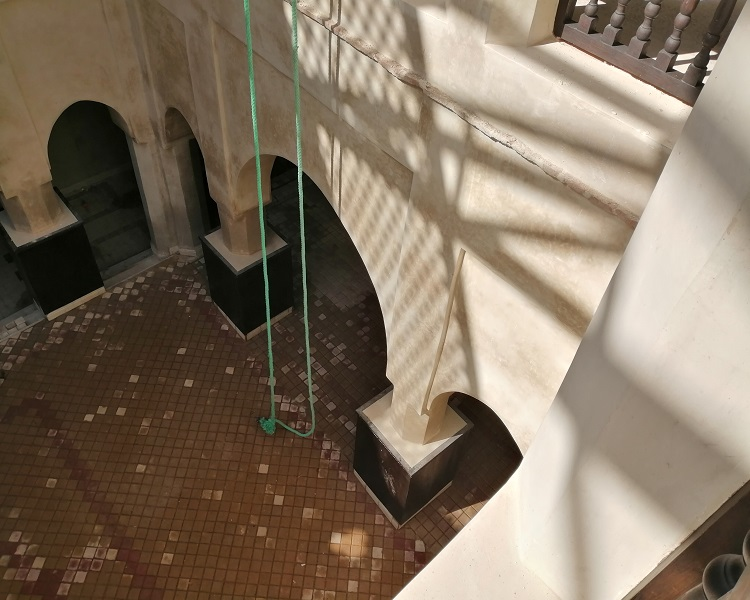
Détecter une fuite d'eau cachée : méthodes simples et techniques
Une fuite invisible peut faire grimper la facture et abîmer une dalle pendant des mois. Quelques tests simples permettent de la confirmer, puis des méthodes non destructives de la localiser.
Lire l'article →
Calcaire et adoucisseur à Marrakech : faut-il traiter l'eau ?
Traces blanches sur la robinetterie, chauffe-eau qui chauffe moins bien, pommeaux de douche bouchés : le calcaire coûte cher. Avant d'acheter un adoucisseur, mesurez la dureté de votre eau.
Lire l'article →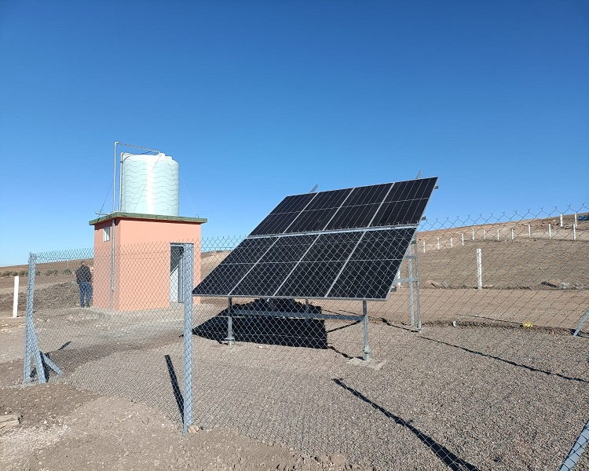
Récupération d'eau de pluie au Maroc : est-ce rentable ?
À Marrakech, il pleut peu et de façon irrégulière. Récupérer l'eau de pluie reste utile pour l'arrosage, à condition de dimensionner la cuve avec réalisme.
Lire l'article →
Douche à l'italienne : pente, siphon et étanchéité à respecter
La douche de plain-pied est devenue la norme dans les villas et riads. C'est aussi l'une des premières causes de dégâts des eaux quand elle est mal conçue.
Lire l'article →Réservoir d'eau et citerne pour la maison : volume et installation
Coupures d'eau, pression faible en été, villa en périphérie : beaucoup de maisons au Maroc ont une réserve d'eau. Bien dimensionnée et bien posée, elle rend service ; mal posée, elle charge la dalle et dégrade l'eau.
Lire l'article →
Prix de la plomberie d'une villa au Maroc : postes et budget
Le lot plomberie-sanitaire pèse moins que le gros œuvre, mais il concentre beaucoup de malfaçons. Voici comment se décompose son prix et comment comparer les devis.
Lire l'article →Climatisation et ventilation
Tout le thème →
Climatisation : quelle puissance (BTU) selon la surface de la pièce ?
Le tableau des puissances selon la surface, les facteurs qui changent tout sous le climat de Marrakech, et quand un vrai calcul devient indispensable.
Lire l'article →
Split, gainable ou VRV : quelle climatisation choisir au Maroc ?
Trois grandes familles de climatisation se partagent les villas et les bâtiments au Maroc. Le bon choix dépend du nombre de pièces, de la place disponible et du budget, pas seulement du prix de l'appareil.
Lire l'article →
VMC simple flux ou double flux : laquelle choisir au Maroc ?
Une ventilation mécanique renouvelle l'air, évacue l'humidité et les odeurs. Le double flux récupère en plus l'énergie de l'air extrait, mais il ne se justifie pas partout.
Lire l'article →
Chauffer une maison à Marrakech : PAC, clim réversible ou plancher ?
On l'oublie souvent en été, mais les maisons de Marrakech sont froides l'hiver. Le bon système de chauffage dépend de l'isolation, de la surface et de ce qui est déjà prévu pour la climatisation.
Lire l'article →
Plancher chauffant et rafraîchissant : fonctionnement et limites
Le plancher chauffant offre le chauffage le plus confortable qui soit. En mode rafraîchissant, il rend service l'été, mais ne remplace pas une climatisation sous le climat de Marrakech.
Lire l'article →
Entretien de la climatisation : à quelle fréquence et que vérifier ?
Un climatiseur mal entretenu consomme plus, refroidit moins et peut diffuser des odeurs ou des moisissures. Quelques gestes simples et une visite annuelle suffisent dans la plupart des maisons.
Lire l'article →
Bruit d'une unité extérieure de clim : où l'installer sans gêner ?
Le bruit des groupes extérieurs est l'une des premières causes de conflit de voisinage liées à la climatisation. Une bonne implantation, choisie dès les plans, règle l'essentiel du problème.
Lire l'article →
Climatiser un riad avec patio : solutions et erreurs à éviter
Un riad n'est pas une villa : patio ouvert sur le ciel, murs épais, décors à préserver et voisins très proches. Sa climatisation se conçoit pièce par pièce, en respectant le bâti.
Lire l'article →
Évacuation des condensats de climatisation : pente, siphon, pompe
Un climatiseur produit de l'eau en refroidissant l'air. Mal évacuée, elle tache les murs, abîme les plafonds, dégage des odeurs ou coule chez le voisin.
Lire l'article →Prix de la climatisation d'une villa au Maroc : ordres de grandeur
Le prix d'une climatisation de villa va du simple au quintuple selon le système, le nombre de pièces et la qualité de pose. Voici les ordres de grandeur du matériel et ce qu'un devis doit contenir.
Lire l'article →
Humidité, condensation et moisissures : causes et solutions
Taches noires dans les angles, buée sur les vitres, odeur de moisi : avant de repeindre, il faut savoir d'où vient l'eau. La condensation n'est qu'une des causes possibles.
Lire l'article →
Ventilation et désenfumage d'un parking d'immeuble : les principes
Un parking couvert doit être ventilé au quotidien pour évacuer les gaz d'échappement, et désenfumé en cas d'incendie pour permettre l'évacuation et l'intervention des secours.
Lire l'article →Hotte et extraction de cuisine professionnelle : les règles à suivre
Une cuisine professionnelle produit chaleur, vapeur, fumées et graisses. Une extraction bien conçue protège le personnel, les voisins et le bâtiment contre l'incendie.
Lire l'article →Thermique et énergie
Tout le thème →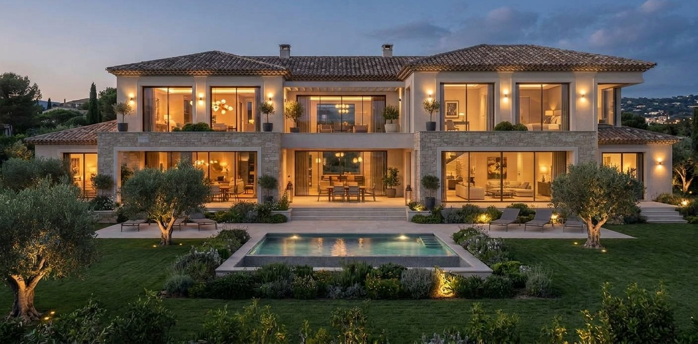
Isolation thermique d'une maison au Maroc : ce que demande le RTCM
Le règlement thermique marocain expliqué simplement : zones climatiques, parois à isoler en priorité, et ce que cela change pour le confort et la facture de climatisation.
Lire l'article →
Ponts thermiques : où ils se trouvent et comment les traiter
Isoler les murs sans traiter les poteaux et les abouts de dalles, c'est laisser des radiateurs en béton dans l'enveloppe. Où sont les ponts thermiques et comment les limiter.
Lire l'article →Double vitrage contre la chaleur au Maroc : ce qui compte vraiment
Contre la chaleur, un double vitrage ordinaire ne suffit pas : c'est surtout le facteur solaire et la protection extérieure qui font la différence.
Lire l'article →Orienter sa maison en climat chaud : les règles pour Marrakech
Avant toute isolation ou climatisation, la façon dont la maison est posée sur le terrain détermine une grande partie de son confort d'été.
Lire l'article →
Quel isolant pour une toiture-terrasse au Maroc ? Comparatif
La toiture-terrasse est la paroi qui reçoit le plus de soleil. Bien choisir son isolant, et le poser au bon endroit par rapport à l'étanchéité, change le confort du dernier étage.
Lire l'article →Brique isolante, double cloison ou monomur : quel mur au Maroc ?
La brique creuse seule isole peu. Voici comment choisir une composition de mur qui protège réellement de la chaleur, sans compromettre la structure parasismique.
Lire l'article →
Protections solaires : brise-soleil, casquettes, volets, moucharabieh
Arrêter le soleil avant qu'il touche la vitre est la mesure la plus efficace contre la surchauffe. Le bon dispositif dépend de l'orientation de la façade.
Lire l'article →
Réduire la facture d'électricité d'une villa au Maroc : les leviers
Dans une villa à Marrakech, la climatisation, l'eau chaude et la piscine font l'essentiel de la facture. Voici les leviers classés par efficacité.
Lire l'article →Audit énergétique d'un bâtiment au Maroc : contenu et obligation
Un audit énergétique dit où part l'énergie d'un bâtiment et quelles actions rapportent le plus. Pour certaines entreprises, il est obligatoire au Maroc.
Lire l'article →Sécurité incendie
Tout le thème →
Sécurité incendie des ERP au Maroc : ce qu'impose le décret 2-14-499
Restaurant, clinique, école, hôtel, commerce : comment le règlement marocain de sécurité incendie s'applique à votre projet et à quel moment il faut s'en occuper.
Lire l'article →Détection incendie d'un hôtel, riad ou maison d'hôtes : le guide
Des personnes qui dorment, souvent dans un bâtiment ancien aux escaliers étroits : l'hébergement touristique est le cas où la détection précoce sauve le plus de vies.
Lire l'article →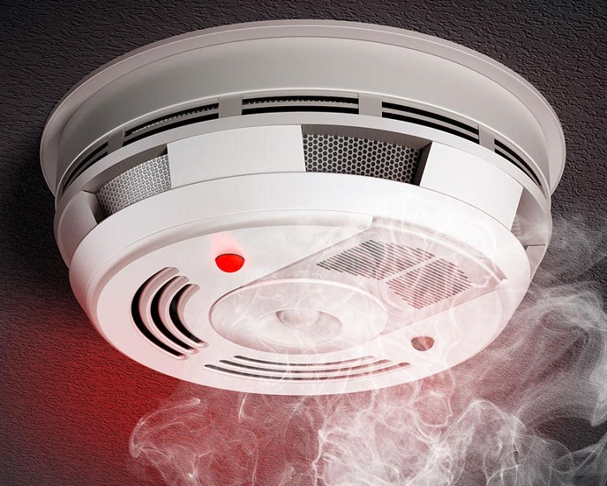
Extincteurs : combien en installer, quel type choisir, quel entretien
Le bon nombre, le bon type au bon endroit et une vérification chaque année : les règles simples pour équiper une maison, un commerce ou un hôtel.
Lire l'article →
Désenfumage naturel ou mécanique : principe, choix et entretien
Dans un incendie, c'est la fumée qui tue le plus. Le désenfumage garde les escaliers et les couloirs praticables le temps de l'évacuation.
Lire l'article →
Issues de secours et dégagements : nombre, largeur, unités de passage
Combien de sorties, de quelle largeur, et où les placer : la logique de calcul des dégagements d'un restaurant, d'un commerce ou d'un hôtel.
Lire l'article →RIA, colonne sèche, sprinkler : différences et cas d'usage
Trois équipements à eau souvent confondus : l'un pour le personnel, l'autre pour les pompiers, le troisième qui agit tout seul.
Lire l'article →Éclairage de sécurité et BAES : règles d'implantation et d'entretien
Quand le courant coupe en plein incendie, les blocs de secours sont la seule chose qui guide les occupants vers la sortie. Voici comment les implanter.
Lire l'article →
SSI catégorie A, B, C, D ou E : comprendre le système incendie
Le SSI est le cerveau de la sécurité incendie d'un bâtiment. Sa catégorie, de A à E, fixe ce qu'il détecte, ce qu'il déclenche et comment il alerte.
Lire l'article →VRD et réseaux
Tout le thème →
VRD d'un lotissement au Maroc : les étapes, des études à la réception
Voirie, assainissement, eau, électricité, éclairage, télécoms : l'ordre logique des études et des travaux d'un lotissement, et ce qui conditionne la vente des lots.
Lire l'article →
Assainissement unitaire ou séparatif : différences et choix au Maroc
Un tuyau pour tout ou deux réseaux distincts : ce que change le choix entre assainissement unitaire et séparatif, pour un lotissement comme pour une villa.
Lire l'article →
Branchement eau et électricité à Marrakech : de la Radeema à la SRM
Qui contacter, quelles pièces préparer et quelles erreurs éviter pour obtenir les branchements d'eau potable, d'assainissement et d'électricité d'une villa ou d'un immeuble.
Lire l'article →Station de relevage des eaux usées : quand en installer une et comment
Quand l'égout public est plus haut que vos évacuations, la gravité ne suffit plus : voici comment fonctionne une station de relevage et comment bien la concevoir.
Lire l'article →
Structure de chaussée : couches, épaisseurs et erreurs à éviter
Une voirie qui se déforme au bout de deux hivers a presque toujours un défaut sous l'enrobé. Voici comment est construite une chaussée et ce qu'il faut contrôler.
Lire l'article →
Éclairage public d'un lotissement : niveaux, mâts, LED et réseau
Combien de lux dans une rue résidentielle, quels candélabres, comment alimenter le réseau : les repères pour concevoir l'éclairage public d'un lotissement.
Lire l'article →Drainage d'un terrain et eaux pluviales : solutions pour votre maison
À Marrakech, il pleut peu mais fort : quelques orages suffisent à inonder un sous-sol ou une piscine. Voici comment gérer l'eau de pluie sur une parcelle.
Lire l'article →
Tranchées et réseaux enterrés : profondeurs, grillages et distances
À quelle profondeur poser l'eau, l'électricité, les télécoms et l'assainissement, comment les signaler et comment éviter qu'une tranchée devienne dangereuse.
Lire l'article →Achat et expertise
Tout le thème →
Expertise avant d'acheter une maison : la checklist lot par lot
Une visite de 30 minutes ne suffit pas à juger une maison. Voici, lot par lot, ce qu'un acheteur doit contrôler, ce qui doit l'alerter et ce que coûte en général une remise en état.
Lire l'article →
Vérifier la structure d'une maison avant achat : les 7 points clés
La structure est le seul lot qui peut rendre une maison invendable ou dangereuse. Voici ce qu'il faut regarder et quand appeler un ingénieur.
Lire l'article →
Vérifier l'électricité d'une maison ancienne : 8 contrôles simples
Une installation électrique vétuste est une cause majeure d'incendie domestique. Huit contrôles permettent de savoir s'il faut la sécuriser ou la refaire entièrement.
Lire l'article →Vérifier plomberie et humidité avant d'acheter : le guide pratique
L'eau est la première cause de désordres dans une maison. Quelques tests simples pendant la visite évitent d'acheter une fuite cachée ou un mur qui ne sèche jamais.
Lire l'article →
Acheter un riad à rénover à Marrakech : pièges et budget travaux
Un riad à rénover dans la médina fait rêver, mais le prix d'achat n'est qu'une partie de la facture. Voici ce qu'il faut vérifier avant de signer et comment estimer les travaux.
Lire l'article →
Réception d'un appartement neuf en VEFA : comment émettre des réserves
Le jour de la remise des clés, ce que vous ne notez pas au procès-verbal risque d'être considéré comme accepté. Voici comment préparer la réception et rédiger vos réserves.
Lire l'article →
Acheter un terrain à bâtir au Maroc : les vérifications à faire
Un terrain annoncé constructible ne l'est pas toujours, ou pas pour le projet que vous imaginez. Voici les vérifications juridiques, urbanistiques et techniques à faire avant de signer.
Lire l'article →
Rénover une maison ancienne : par où commencer et dans quel ordre
Refaire la cuisine avant la toiture, c'est risquer de tout recommencer. Voici l'ordre logique d'une rénovation, du diagnostic aux finitions.
Lire l'article →
Prix d'une expertise bâtiment au Maroc : tarifs et contenu du rapport
Expertise de valeur, diagnostic technique, expertise judiciaire : les prestations n'ont ni le même contenu ni le même prix. Voici comment s'y retrouver.
Lire l'article →
Maison construite sans permis ou non conforme : quels risques ?
Étage ajouté, extension non déclarée, maison sans permis d'habiter : ces situations sont fréquentes. Elles exposent l'acheteur à des risques juridiques, financiers et parfois techniques.
Lire l'article →Titre foncier et conformité d'une maison : ce qu'il faut vérifier
Un titre foncier en règle ne dit rien de ce qui a été construit dessus. Pour acheter sereinement, il faut vérifier séparément la propriété et la conformité de la construction.
Lire l'article →
Rénovation électrique complète d'une maison : étapes et coût
Refaire toute l'électricité d'une maison est un chantier lourd mais décisif pour la sécurité. Voici les étapes, ce qui fait le prix et comment comparer les devis.
Lire l'article →Démarches, prix et chantier
Tout le thème →
Permis de construire au Maroc : étapes, dossier Rokhas et délais
De la note de renseignements à l'affichage sur le chantier : les étapes du permis de construire, les pièces du dossier Rokhas et ce qui fait perdre des semaines.
Lire l'article →
Prix d'un bureau d'études techniques au Maroc : honoraires et devis
Pourcentage des travaux ou forfait, ce qui fait varier le prix, ce qu'un devis sérieux doit contenir : tout pour budgéter les études techniques de votre projet.
Lire l'article →Prix de construction au m² au Maroc en 2026 : gros œuvre et finitions
Gros œuvre, finitions, clé en main : les prix au m² constatés au Maroc en 2026, un exemple chiffré et les dépenses à ne pas oublier dans votre budget.
Lire l'article →Permis d'habiter et certificat de conformité au Maroc : la procédure
Sans permis d'habiter, une maison neuve ne peut être ni occupée légalement, ni raccordée durablement, ni vendue sereinement. Voici comment l'obtenir sans mauvaise surprise.
Lire l'article →
Bureau de contrôle au Maroc : rôle et quand il devient obligatoire
Le bureau de contrôle ne conçoit pas le bâtiment : il vérifie, pour le compte du maître d'ouvrage et de l'assureur, que la conception et l'exécution ne présentent pas de risque technique.
Lire l'article →
Garantie décennale au Maroc : article 769 du DOC et assurance RCD
Au Maroc, la responsabilité décennale existe depuis le Dahir des obligations et contrats, mais son champ est plus étroit qu'en France. Ce qu'elle couvre, qui elle vise et comment se protéger.
Lire l'article →
Réception des travaux et réserves : la procédure pas à pas
La réception est l'acte par lequel vous acceptez l'ouvrage. Ce que vous ne signalez pas ce jour-là devient beaucoup plus difficile à faire reprendre ensuite.
Lire l'article →
Contrat avec l'entreprise de construction : les clauses essentielles
La plupart des conflits de chantier viennent d'un contrat trop court. Voici les clauses à exiger avant de confier la construction de votre maison à une entreprise.
Lire l'article →
Plans de récolement et DOE : le dossier à exiger en fin de chantier
Dans cinq ans, quand une fuite apparaîtra sous le carrelage ou qu'un disjoncteur sautera, ce dossier vous fera gagner des jours de recherche et beaucoup d'argent.
Lire l'article →
Suivi de chantier par le bureau d'études : quelles visites prévoir
Un plan parfait ne sert à rien si le chantier ne le respecte pas. Le suivi du bureau d'études consiste à être présent aux moments où une erreur devient invisible.
Lire l'article →Travaux de rénovation au Maroc : faut-il une autorisation ?
Refaire une cuisine n'a rien à voir avec ouvrir un mur porteur ou fermer une terrasse. Le niveau d'autorisation dépend de ce que les travaux modifient.
Lire l'article →
Cahier des charges (CPS) d'une construction : contenu et utilité
Sans cahier des charges, chaque entreprise chiffre un bâtiment différent et vous ne pouvez ni comparer les offres, ni exiger la qualité promise.
Lire l'article →
Architecte obligatoire au Maroc ? Lois 12-90 et 016-89
Pour construire en ville au Maroc, l'architecte n'est pas une option. Ce que la loi exige, les exceptions possibles et la répartition des rôles avec le bureau d'études.
Lire l'article →
Maison d'hôtes au Maroc : normes, loi 80-14 et classement en étoiles
Transformer un riad en maison d'hôtes, c'est changer d'usage : le bâtiment devient un établissement d'hébergement touristique, avec ses propres exigences de classement et de sécurité.
Lire l'article →
Le BIM pour un projet de construction : avantages concrets
Le BIM n'est pas un logiciel de 3D de plus : c'est une manière de concevoir le bâtiment entier dans une même maquette, pour régler les problèmes avant le chantier.
Lire l'article →
Prix de construction d'une villa à Marrakech en 2026
Combien coûte le m² construit selon la gamme, quelle part pèse le gros œuvre, et ce qu'il faut ajouter au prix du bâtiment pour obtenir un budget réaliste.
Lire l'article →
À quoi sert un bureau d'études techniques dans votre projet ?
Architecte, BET, bureau de contrôle : qui fait quoi, à quel moment le bureau d'études intervient, et pourquoi il fait souvent économiser plus qu'il ne coûte.
Lire l'article →